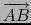

suivant: L'équation cartésienne d'un objet
monter: Les mesures
précédent: La cote d'un point
Table des matières
Index
Les coordonnées d'un point, d'un vecteur ou d'une droite 3D : coordinates coordonnees
Voir aussi : 9.16.4 pour la géométrie plane.
coordonnees, en géométrie 3D, est une fonction ayant
comme argument un point ou un vecteur ou une droite 3D.
coordonnees renvoie la liste de l'abscisse, de l'ordonnée et de la cote
du point ou du vecteur ou renvoie une matrice de 2 lignes qui donnent
l'abscisse, l'ordonnée et la cote de 2 points de la droite orientée.
On a :
- si le point A a pour coordonnées cartésiennes
(xA, yA, zA),
coordonnees(A) renvoie
[xA, yA, zA],
- si le point B a pour coordonnées cartésiennes
(xB, yB, zB),
coordonnees(vecteur(A,B)) ou B-A renvoie
[xB - xA, yB - yA, zB - zA]
car B-A désigne les coordonnées du
vecteur
,
- si le vecteur V a pour coordonnées cartésiennes
(xV, yV, zV),
coordonnees(V) ou coordonnees(vecteur(A,V)) renvoie
[xV, yV, zV],
- si une droite d est définie par deux points A et B,
coordonnees(d) renvoie [coordonnees(A),coordonnees(B)],
- si une droite d est définie par son équation,
coordonnees(d) renvoie [coordonnees(A),coordonnees(B)] où A
et B sont deux points de la droite d, le vecteur AB ayant
même orientation que d.
On tape :
coordonnees(point([1,2,3]))
Ou on tape :
coordonnees(point(1,2,3))
On obtient :
[1,2,3]
On tape :
coordonnees(vecteur(point([1,2,3]),point([2,4,7])))
Ou on tape :
coordonnees(vecteur(point(1,2,3),point(2,4,7)))
Ou on tape :
coordonnees(vecteur([1,2,3],[2,4,7])))
Ou on tape :
coordonnees(vecteur([1,2,4])))
Ou on tape :
coordonnees(vecteur([1,2,3],vecteur([1,2,4])))
Ou on tape :
point([2,4,7])-point([1,2,3])
On obtient :
[1,2,4]
On tape :
d:=droite(point(-1,1,0),point(1,2,3))
coordonnees(d)
On obtient :
[[-1,1,0],[1,2,3]]
On tape :
d:=droite(x-2*y+3=0,6*x+3*y-5*z+3=0)
coordonnees(d)
On obtient :
[[-1,1,0],[9,6,15]]
Attention
coordonnees peut aussi avoir comme argument une séquence ou une liste
de points. coordonnees renvoie alors la séquence ou la liste des
listes des coordonnées de ces points, par exemple :
coordonnees(point([0,1,2]),point([1,2,4]))
renvoie la séquence :
[0,1,2],[1,2,4]
et
coordonnees([point([0,1,2]),point([1,2,4])])
renvoie la matrice :
[[0,1,2],[1,2,4]] mais
coordonnees([1,2,4])
renvoie la matrice :
[[1,0],[2,0],[4,0]]
car [1,2,4] est considéré comme la liste de
3 points d'affixe 1, 2 et 4.
suivant: L'équation cartésienne d'un objet
monter: Les mesures
précédent: La cote d'un point
Table des matières
Index
Documentation de giac écrite par Renée De Graeve